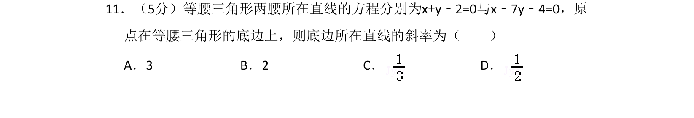
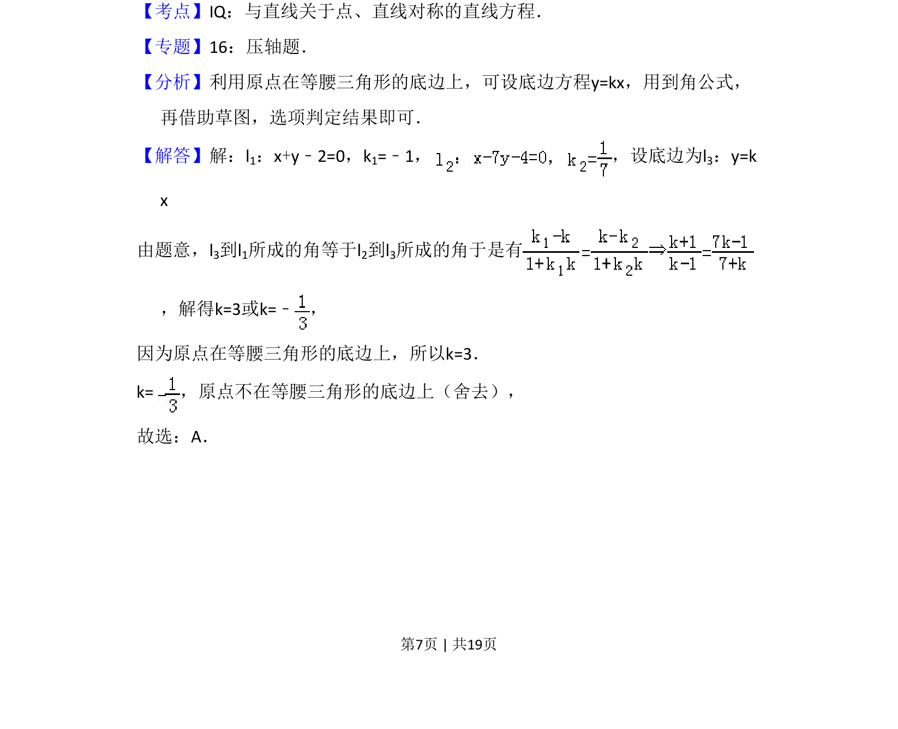
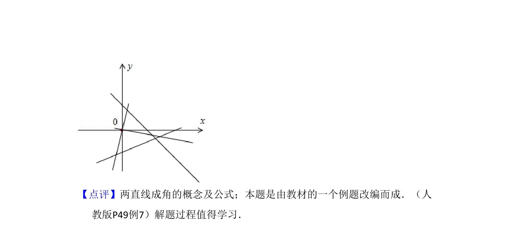

考点：直线方程 到角公式 直线对称

等腰三角形两腰方程已知，原点在底边上，利用到角公式求底边斜率，涉及直线对称性。


📄 原 PDF 第 7 页：
素材/真题/吉林/2008-2024·（吉林）数学高考真题/2008年高考数学试卷（理）（全国卷Ⅱ）（解析卷）.pdf
11．（5分）等腰三角形两腰所在直线的方程分别为x+y﹣2=0与x﹣7y﹣4=0，原 点在等腰三角形的底边上，则底边所在直线的斜率为（ ） A．3 B．2 C．D．
【考点】IQ：与直线关于点、直线对称的直线方程．菁优网版权所有 【专题】16：压轴题． 【分析】利用原点在等腰三角形的底边上，可设底边方程y=kx，用到角公式， 再借助草图，选项判定结果即可． 【解答】解：l1：x+y﹣2=0，k1=﹣1， ，设底边为l 3：y=k x 由题意，l3到l1所成的角等于l2到l3所成的角于是有 ，解得k=3或k=﹣ ， 因为原点在等腰三角形的底边上，所以k=3． k=，原点不在等腰三角形的底边上（舍去）， 故选：A．